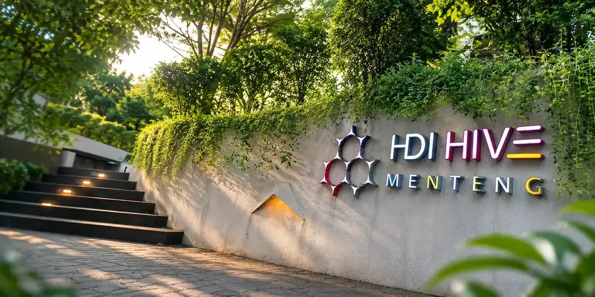
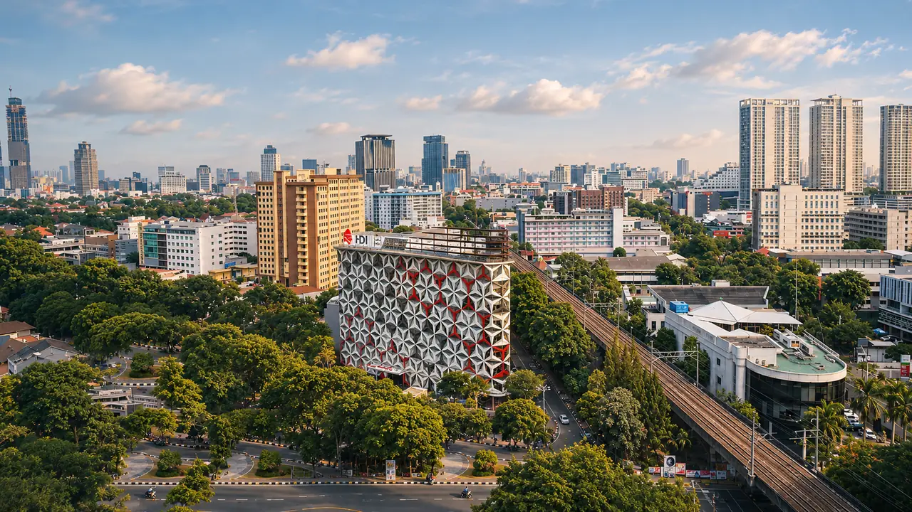
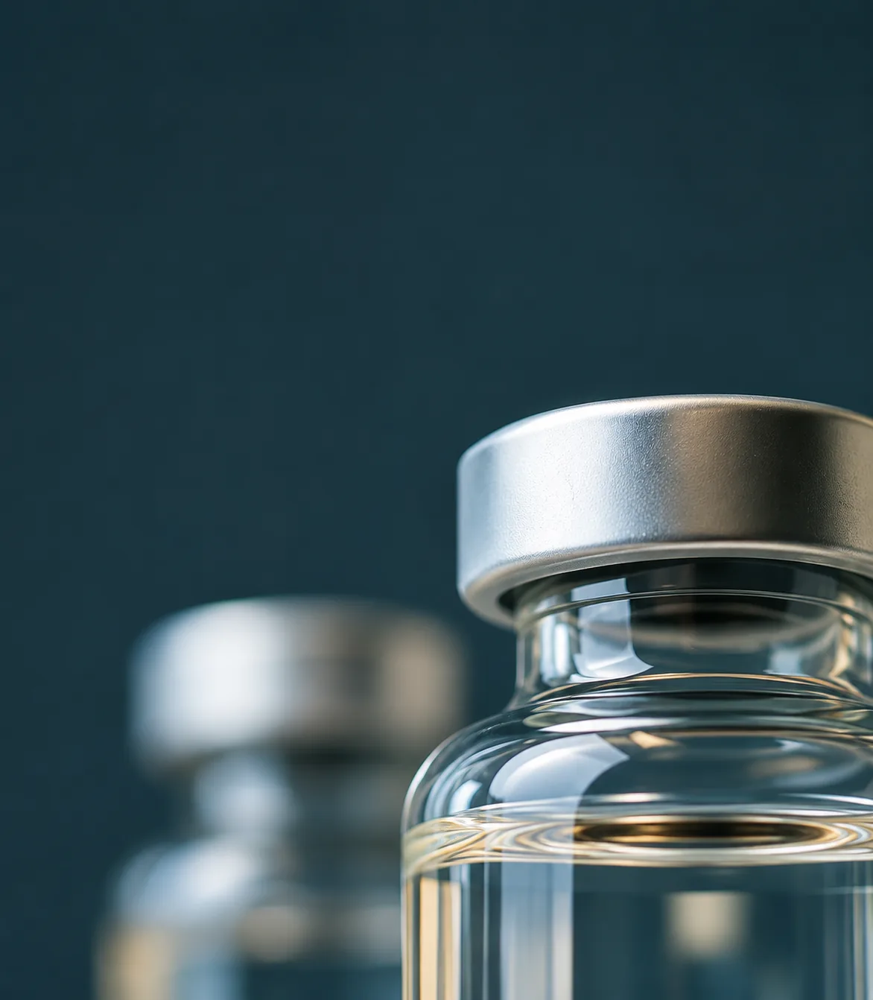
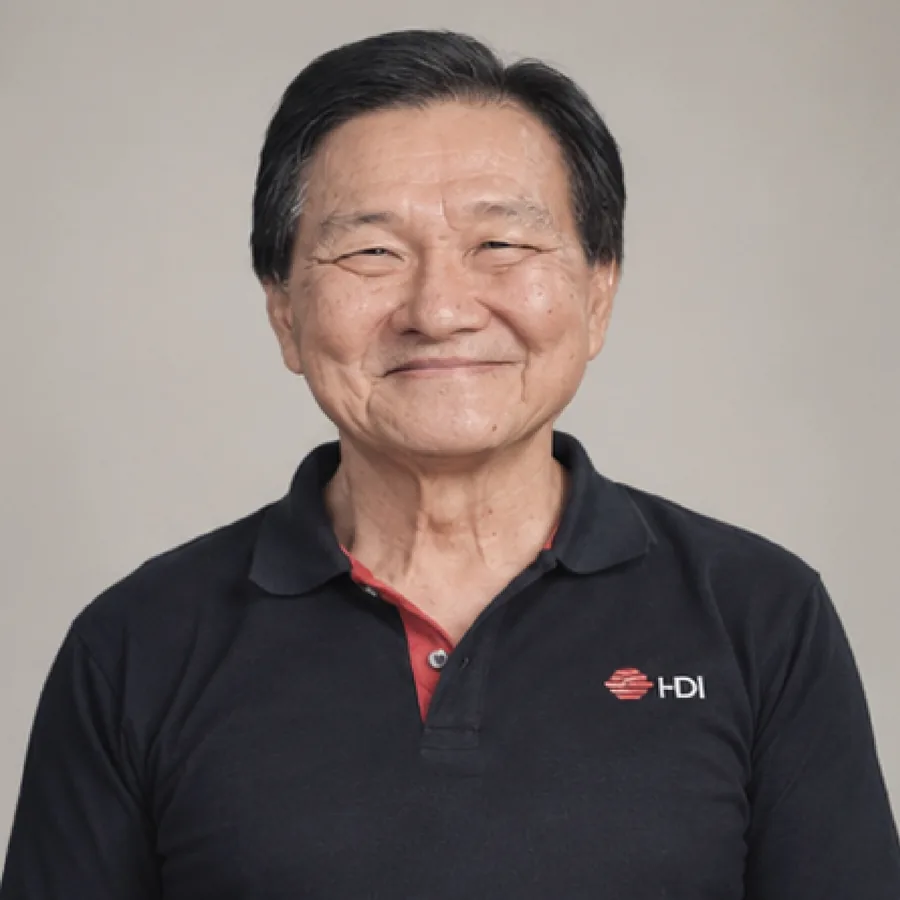

Inisiasi Riset Lebah Alami di Asia Tenggara

Formulasi Royal Jelly & Bee Propolis Teruji
01 / Identitas & Kelahiran Entitas AHU-0019284.AH.01.02
Fondasi Sains, Integritas Korporasi & Kepemimpinan Ekosistem HDI.
PT High-Desert Indonesia Identitas, legalitas, dan tata kelola perusahaan.
01 / Identitas


Perjalanan institusional PT High-Desert Indonesia berakar dari dedikasi ilmiah era Mr. Peter Chia sejak 1986—merintis standardisasi bioaktif apiterapi alami berbasis farmakope di Nusantara. Hari ini, kami berdiri kokoh sebagai holding biologis terintegrasi dengan kepatuhan tata kelola tanpa kompromi.
Opini Wajar Tanpa Pengecualian
Sistem Administrasi Badan Hukum Perseroan Terbatas
01.348.829.1-073.000
02 / Sejarah & Rekam Jejak
Arsip Kronologis 1986 — 2024
Formulasi Royal Jelly & Bee Propolis Teruji

100% Produk Lulus Uji Laboratorium Mutu
KBLI 46441 / 46461 / 72101
03Good Corporate Governance (GCG)
Perseroan memberlakukan standar tata kelola fiskal transparan:
Laporan SPT Badan terverifikasi dengan pelunasan PPh & PPN tertib.
Sistem customs clearance bebas hambatan berkat rekam jejak deklarasi faktur akurat.
Dokumentasi transaksi afiliasi sesuai prinsip Arm's Length Principle (PMK-172/2023).
Kode Etik Bisnis • PT High-Desert Indonesia Direvisi 2024
Dokumen Kepatuhan Lembaga Keuangan & Fiskal
Sebagai komitmen perseroan terhadap Good Corporate Governance (GCG), seluruh laporan tahunan, pergerakan devisa hasil ekspor/impor bahan bioaktif, dan transfer pricing antar-afiliasi grup HDI diaudit secara berkala oleh Kantor Akuntan Publik (KAP) terdaftar OJK dan Kementerian Keuangan RI. Kepatuhan perpajakan dijamin penuh melalui pelaporan SPT Tahunan Wajib Pajak Badan secara presisi.
Status Pabean & Pajak
Jalur HijauPemberitahuan Impor Barang (PIB)
Mitra Utama Kepabeanan (MITA)
Penandatangan Resmi SPT / Fiskal
Direktorat Keuangan & Hukum Perseroan
03 / Pilar Strategis Perseroan
Prinsip akuntabilitas struktural yang menopang seluruh keputusan operasional, perizinan, dan hubungan kemitraan holding kami.
Mutu tertinggi, keaslian ilmiah, dan pasokan yang berkelanjutan.
Baca selengkapnyaTiga komitmen yang menopang setiap lini sediaan perseroan.
Baca selengkapnya04 / Kepemimpinan Terpilih
Dikelola oleh profesional berpengalaman dengan komitmen hukum dan integritas fiskal yang terverifikasi bagi otoritas regulasi serta mitra perbankan.


05 / Pusat Operasional & Aset
Berlokasi strategis di koridor premium Jakarta Pusat, HDI Hive Menteng dirancang dengan filosofi sarang lebah heksagonal yang mengedepankan efisiensi termal, panel surya terintegrasi, dan ruang sanitasi farmasi khusus.
Kantor Terdaftar OJK/DJP
HDI Hive Menteng (Lt. 8)